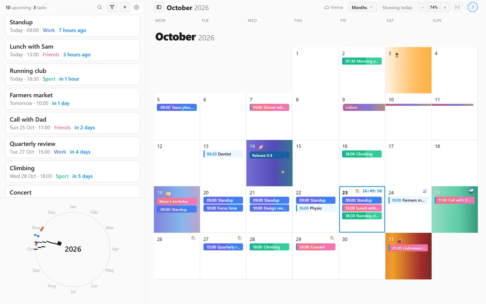
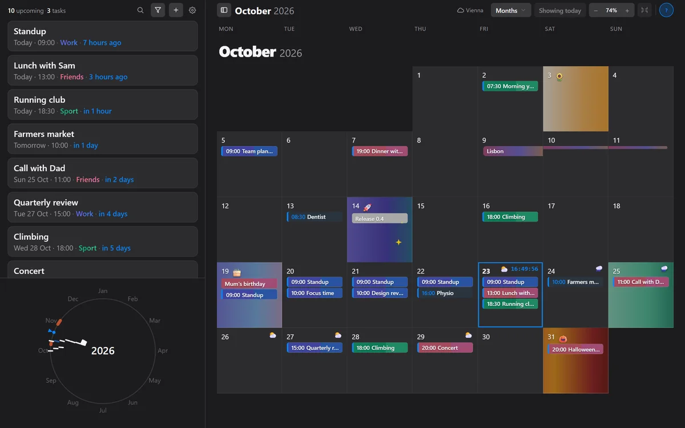
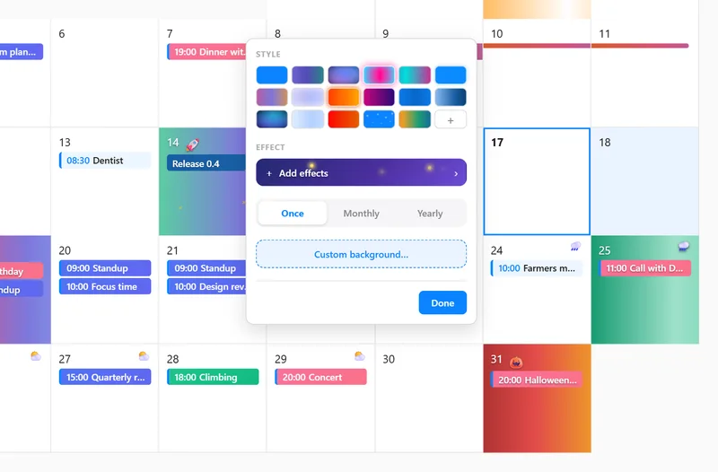
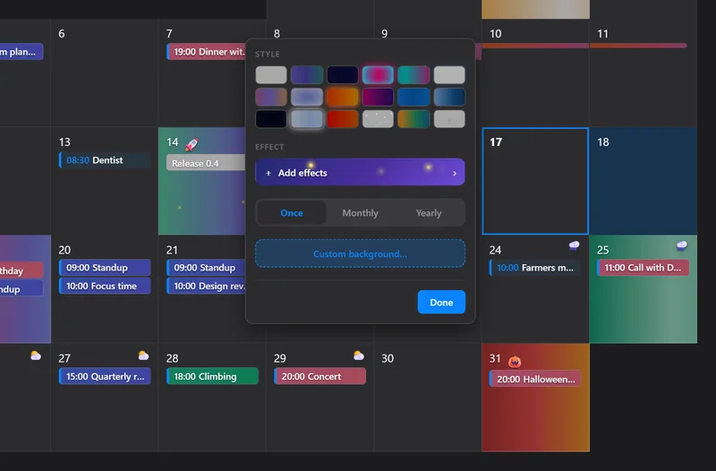
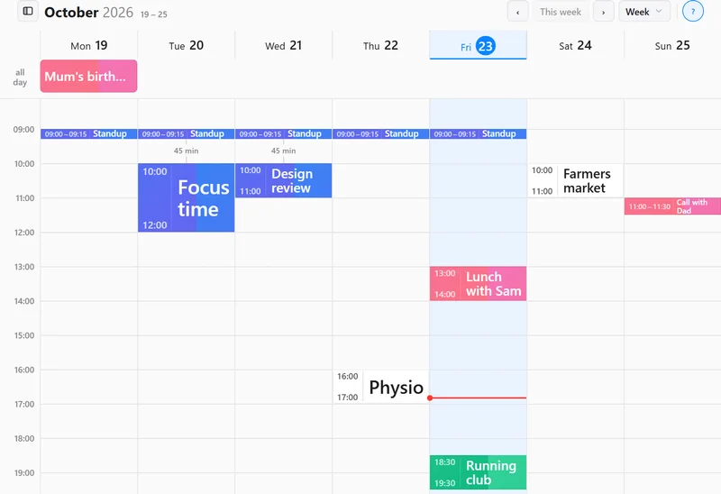
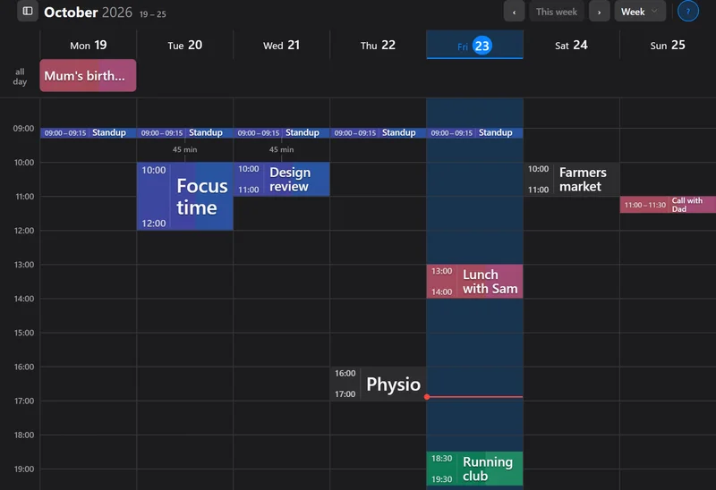
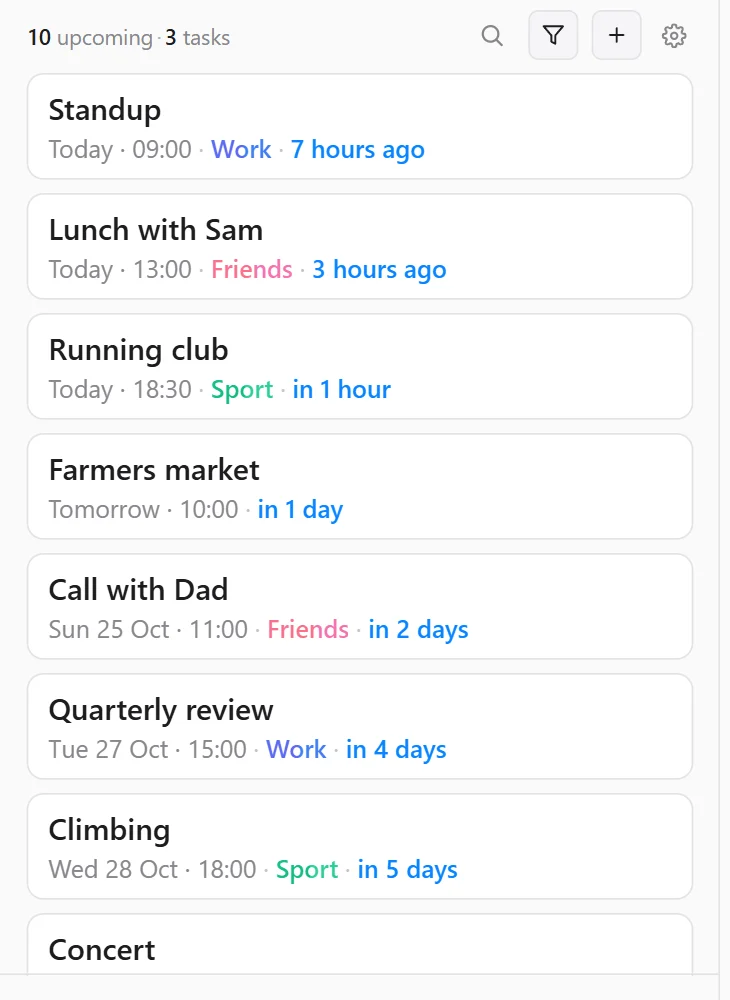
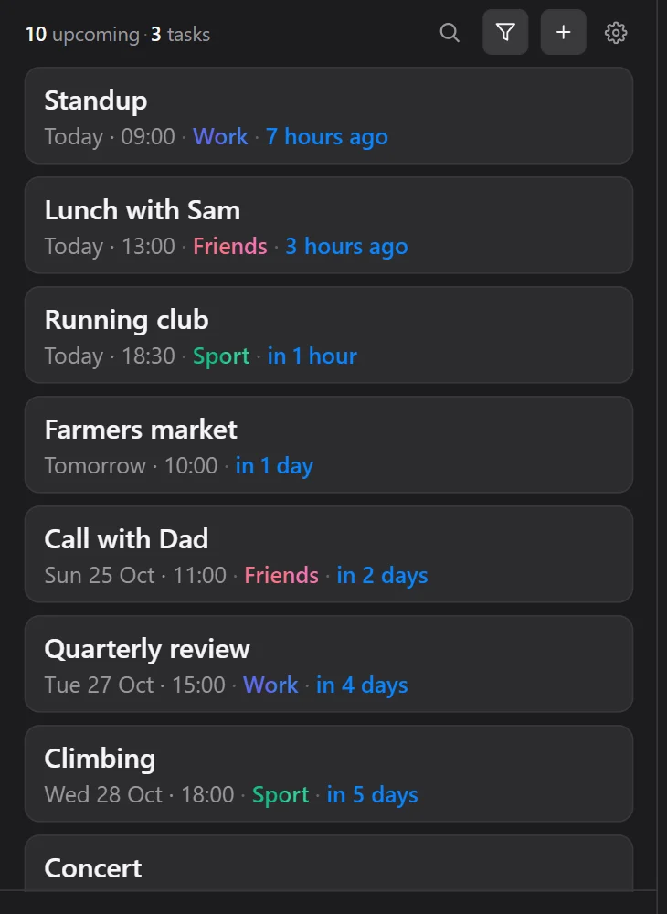

Your month,
in your colors.
A free calendar for Windows, macOS, Linux and your browser. Give any day its own look, see Apple and Google calendars side by side, and keep your events on your own computer.
Free. No account. Open source.
Psst: these are real Terra Calendar days. Click one to give it another style.


Give any day its own look.
Pick a flowing gradient, add sparkles or an emoji, or set your own photo, GIF or short video as the day's background. Birthdays, trips and deadlines stand out before you read a word.
Categories get colors too, so work, friends and sport are easy to tell apart.


Plan the week hour by hour.
Switch to the week view to see each day as a timeline. Free gaps between meetings are marked, a red line shows the time right now, and the weather sits on the day.


Apple and Google, side by side.
Connect your Apple iCloud and Google calendars and edit both in one place. Changes go both ways, so your phone stays up to date.
Rather keep it simple? Terra Calendar also works with no account at all and saves your events in a file on your computer.
What's next, at a glance.
The side panel lists what's coming up and how soon, keeps your tasks, and shows the whole year on a dial. Add habit tabs to track workouts, mood or a one-line diary right in the month.


Private by default.
The desktop app runs no server of ours and never sees your events. They live in a file on your computer or in your own Apple and Google accounts. Privacy policy
Make next month yours.
Questions or ideas? Join us on Discord.